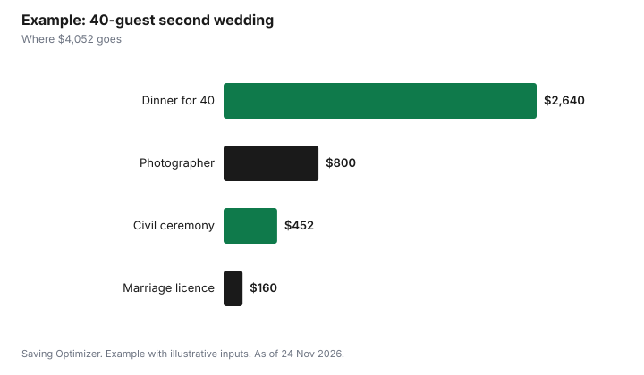

Weddings · Canada
Second Weddings: A Canadian Cost Guide

A second wedding costs whatever you choose to spend, but the paperwork has extra steps. In Ontario you'll need an original or court-certified Certificate of Divorce to get a marriage licence, and a divorce granted outside Canada needs approval from ServiceOntario first. Many couples plan smaller this time and put the savings toward the life they're merging.
Key takeaways
- Ontario licence offices need an original or court-certified Certificate of Divorce, not a divorce judgment or order.
- Divorced outside Canada? You need a Foreign Divorce Authorization from ServiceOntario before a licence is issued.
- Pickering's marriage licence is $160 and a civil ceremony is $400 plus HST (checked 24 Nov 2026).
- Update your will and beneficiaries, and consider a marriage contract.
- Example: a 40-guest second wedding, about $4,052.
Paperwork first
- Divorced in Canada: bring the original or a court-certified copy of the Certificate of Divorce. Order one from the court that granted it if needed.
- Divorced outside Canada: send ServiceOntario the licence application, a statement of sole responsibility, a legal opinion letter from an Ontario lawyer and the divorce decree, and wait for a Foreign Divorce Authorization.
- Annulled: bring the court annulment document. A religious annulment isn't enough.
- Other provinces have similar rules. Ask the licence office before you book anything.
The legal opinion letter for a foreign divorce costs whatever the lawyer charges, so ask for a quote, and allow extra weeks for the review.
Money conversations
Second marriages often involve homes, pensions, support payments and children from earlier relationships. In Ontario, marriage no longer revokes a will (the rule changed in 2022), so an old will may still name a former spouse unless you update it. Check RRSP, TFSA and life insurance beneficiaries too, and talk about whether a marriage contract makes sense.
Where to spend and save
| Item | Example cost |
|---|---|
| Marriage licence | $160 |
| Civil ceremony at city hall ($400 plus HST) | $452 |
| Dinner for 40 at $66 a head | $2,640 |
| Photographer, 2 hours | $800 |
| Total | $4,052 |

Ask guests not to bring gifts if you already have a household, or set up a cash or honeymoon fund. For the legal side, see marriage contract costs and marriage and your will in Ontario.
Sources
- City of Pickering, Marriages (licence fee, civil ceremony fee, divorce documents, Foreign Divorce Authorization), checked 24 Nov 2026.
- Ontario, Apply for a marriage licence, checked 24 Nov 2026.
- The Keg, group dinner menus (Pioneer menu, $66 per person), checked 24 Nov 2026.
Frequently asked questions
What do I need for a marriage licence if I'm divorced?
In Ontario, an original or court-certified copy of the Certificate of Divorce or Decree Absolute. A divorce judgment or order isn't accepted.
What if my divorce was granted outside Canada?
In Ontario you need a Foreign Divorce Authorization from ServiceOntario, which needs a legal opinion letter from an Ontario lawyer, before a licence can be issued.
Does getting remarried cancel my will?
Not in Ontario since 2022. Update your will so it reflects your new marriage.
Who pays for a second wedding?
Usually the couple. There's no fixed tradition.
Should we get a marriage contract?
It's worth considering if either of you has a home, a business, children or support obligations. Talk to a family lawyer.
Researched and drafted with AI assistance and fact-checked against official Canadian sources. How we create content.
Note: Fees are from the City of Pickering; other offices differ. Not legal advice. Education only.